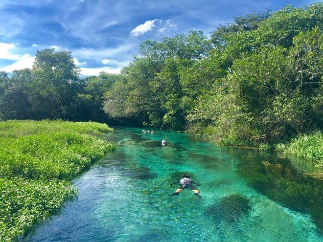

Mato Grosso do Sul é um estado brasileiro localizado na região Centro-Oeste, conhecido por sua rica diversidade natural, cultural e econômica. Criado em 1977, após desmembramento de Mato Grosso, o estado possui uma área de aproximadamente 357 mil km² e uma população de cerca de 2,8 milhões de habitantes .
